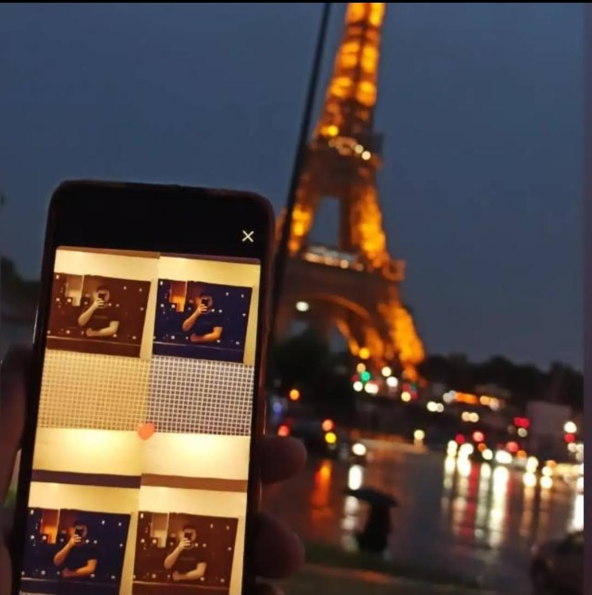

I am a normal human who is just searching for the truth. I am currently lost and depressed, trying to find the real purpose of life. The voices in my head are asking, Who are we? Why was I created? And what will happen after death? Is it a blank screen? Is it the end? Is Islam a big lie? Did the creator forget about us? I can't accept that I might sleep and never wake up again, leaving behind the people I love, the pleasures I have, or the money I make.
I'd rather rot in hell than be gone forever; however, as human beings, there are some facts that we must accept; it doesn't matter whether we like it or not. All I know is that I'll do my best to become a stronger and happier person who is more successful, and I won't give up because I truly believe in myself. We'll do it, Omar. We'll do it, bro!
